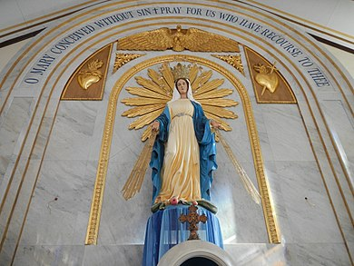

Geoinfos
Informações técnicas sobre relevo, população, IDH etc.
| INFORMAÇÕES | |
|---|---|
| Municípios limítrofes | norte : Ipueiras e Hidrolândia Sul :Crateús leste : Catunda e Tamboril oeste : Ararendá e Ipaporanga |
| Fundação | 11 de novembro de 1922 (98 anos) |
| Área total | 742,763 km² |
| Clima | semi-árido |
| IDH | 0,64 — médio |
| PIB | R$ 118 813,518 mil |
| INFORMAÇÕES TERRITORIAIS | |
|---|---|
| Número de habitantes | 32 328 habitantes |
| Superfície de Nova Russas |
74 276 hectares
742,76 km² |
| Densidade populacional | 43,5 ha./km² |
| Altitude de Nova Russas | 237 metros de altitude |
| Coordenadas geográficas decimais |
Latitude:
-4.70586
Longitude: -40.5653 |
| Coordenadas geográficas sexagesimais | Latitude: 4° 42' 21'' Sul , Longitude: 40° 33' 55'' Oeste |
| INFORMAÇÕES DO MUNICÍPIO | |
|---|---|
| Endereço da Prefeitura Municipal de Nova Russas |
Nova Russas
Prefeitura de Nova Russas
Rua Padre Francisco Rosa, 1388 NOVA RUSSAS - CE, 62200-000 Brasil |
| Telefone da prefeitura |
(88) 3672-6016
Internacional: +55 88 3672-6016 |
| Fax |
(88) 3672-1071
Internacional: +55 88 3672-1071 |
| Endereço electrónicoda prefeitura |
Não disponível
|
| Site oficial do município | novarussas.ce.gov.br |
| INFORMAÇÕES ADMINISTRATIVAS | ||
|---|---|---|
| Prefeito de Nova Russas | GIORDANNA SILVA BRAGA MANO | |
| Partido politico | PL | |
| INFORMAÇÕES DE TRANSPORTE | |
|---|---|
| Transporte urbano disponível | Não disponível |
| Aeroporto |
Aeroporto de Sobral 116.8 km
Aeroporto Pinto Martins
202.1 km
Aeroporto Internacional Prefeito Dr.João Silva Filho
239.8 km
|
| INFORMAÇÕES DE DISTÂNCIA A OUTRAS CIDADES | ||
|---|---|---|
| São Paulo : 2197 km | Rio de Janeiro : 2046 km | Brasília : 1472 km |
| Salvador : 947 km | Belo Horizonte : 1722 km | Manaus : 2169 km |
| Curitiba : 2487 km | Fortaleza : 250 km mais perto | Goiânia : 1636 km |
| Belém : 953 km | Porto Alegre : 3033 km | Guarulhos : 2176 km |
| Campinas : 2143 km | São Luís : 481 km | Recife : 731 km |
| Distância calculada em linha reta! | ||
Fonte: Wikipedia e Cidade Brasil
História
Conheça mais sobre a história da Nova Russas.
As terras ao sopé da Chapada da Ibiapaba, às margens dos rios Acaraú, Poti e Curtume eram habitadas por diversa etnias entres elas os Tabajara, Caratiú, Tupinambá. Com a definitiva ocupação do solo cearense pelos portugueses na segunda metade do século XVII, a expansão do ciclo do Charque e da Carne-seca no século XVIII, a doação de terras via semarias, chegaram a região famílias que implantaram fazenda de gados como as do Curtume e do Olho d'Água Grande. Nova Russas surgiu do desenvolvimento da Fazenda Curtume, situada às margens do riacho várzea Grande, implantada pelo Capitão-Mor Bernardino Gomes Franco, que se estabeleceu na localidade no segundo quartel do século XVIII. O nome da fazenda provém da pequena atividade rudimentar de curtir couros peles, praticada pelo seus primitivos proprietários dai o nome curtume. A fazenda passou por sucessivos proprietários até chegar ao domínio de Manuel Oliveira Peixoto e sua esposa, que doaram no ano de 1876 uma parte desta à paróquia de Santo Anastácio de Tamboril, para constituir o patrimônio de uma capela devotada a Nossa Senhora das Graças, construída posteriormente pelo vigário de Tamboril, padre Joaquim Ferreira de Castro. Em torno dessa capela desenvolveu-se o povoado que o padre denominou Nova Russas, ou seja, outra Russas, homenagem à localidade do Baixo Jaguaribe do mesmo estado de onde padre Joaquim era natural.
Em 17 de agosto de 1902 a povoação foi elevada a categoria de distrito Judiciário do município de Ipueiras, data em que adotou oficialmente o nome de Nova Russas. Curtume, que era o nome da fazenda, foi aplicado ao rio que banha a cidade vindo a se denominar Curtume. Com expansão da Estrada de Ferro de Sobral-Camocim, para a cidade de Ipu, a malha ferroviária desta chegou a Novas Russas, fato ocorrido em 3 de novembro de 1910 instalando nesse referencial itinerante a Estação de Cargas e Passageiros. O então distrito de Nova Russas teve grande desenvolvimento, tendo sido pouco tempo depois emancipado através da lei estadual 2043 de 11 de novembro de 1922, desmembrado do município de Ipueiras e instalado em 28 de janeiro de 1923 com a posse de seu primeiro gestor Antonio Rodrigues Veras. Foi extinto pelo decreto 193 de 20 de maio de 1931 e anexado ao município de Ipueiras e restaurado em 4 de dezembro de 1933 pelo decreto estadual 1156 do interventor federal do estado, capitão Roberto Carneiro de Mendonça que também nomeou como interventor municipal Luís Moreira de Barbalho. O território primitivo do município foi dividido para a formação de duas outras cidades; Ipaporanga e Ararendá. Da capela de Nossa Senhora das Graças, surgiu a paróquia de Nova Russas, por ato do bispo Dom José Tupinambá da Frota, no dia 15 de agosto de 1937, sendo deu primeiro vigário o Padre Francisco Ferreira de Morais.
Pontos Turísticos
Saiba mais sobre os melhores lugares e o que fazer em Nova Russas.

Imagem da Capela de Nossa Senhora das Graças
Como Chegar?
Veja como chegar nos melhores pontos de Nova Russas